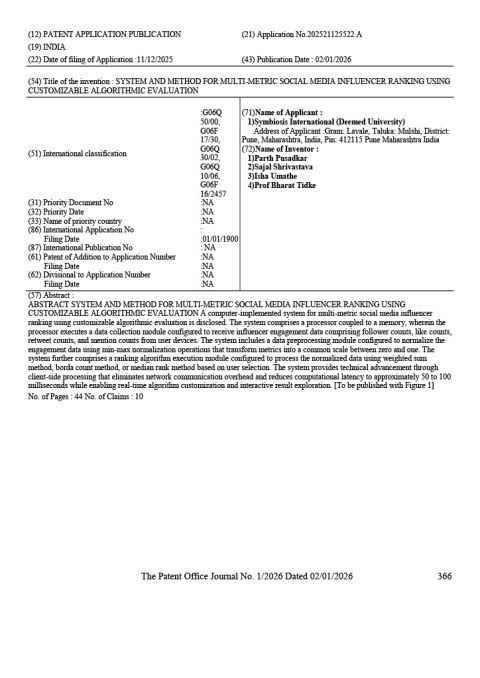
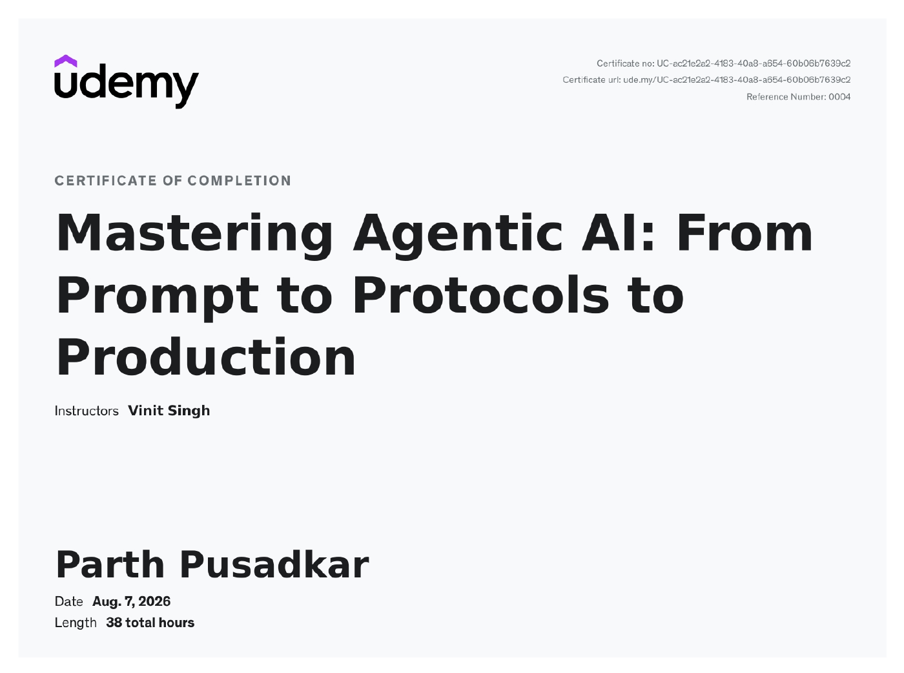
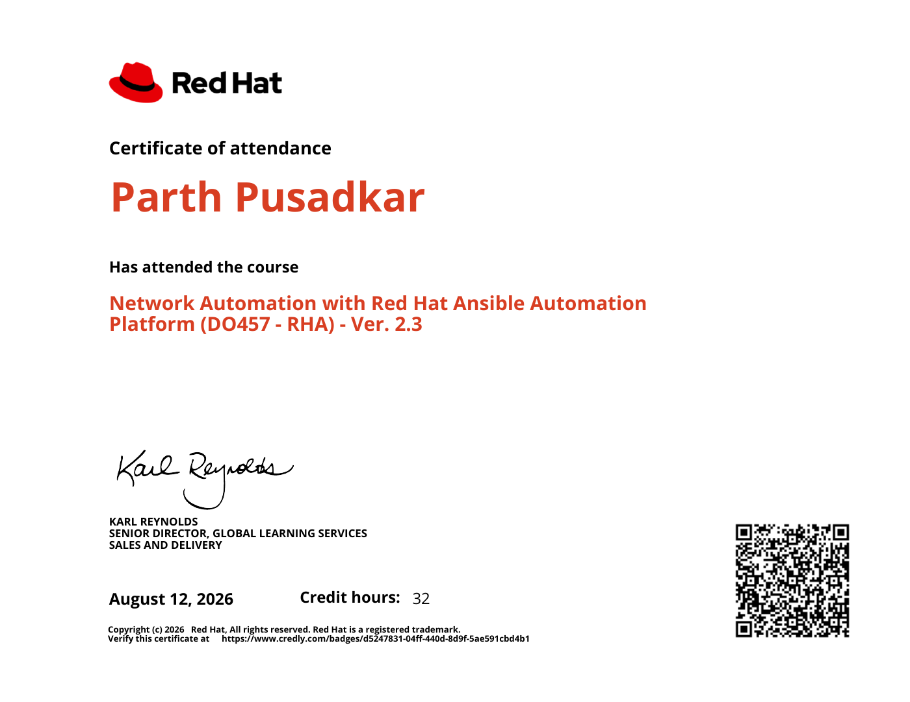
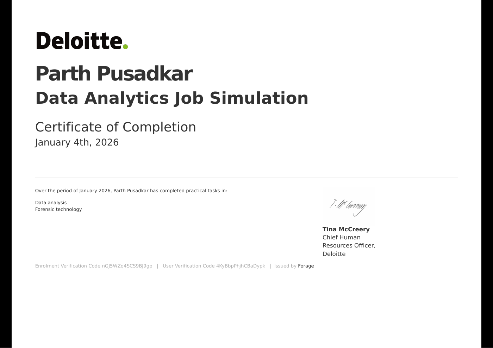

2024 — 2028
B.Tech · Computer Science & Engineering (AI/ML)
Symbiosis Institute of Technology · Nagpur
Current CGPA: 6.3 / 10
Artificial IntelligenceMachine LearningData Structures & AlgorithmsDBMSProbability & Statistics
COMPUTER SCIENCE UNDERGRADUATE · NAGPUR
I’m a third-year B.Tech student at Symbiosis Institute of Technology, studying Computer Science and Engineering with a specialisation in AI and Machine Learning. I work on software and data projects, and I’m exploring cloud engineering too.
Third-year B.Tech · CSE (AI/ML)
I study Computer Science and Engineering at Symbiosis Institute of Technology in Nagpur, with a specialisation in AI and Machine Learning.
So far, I’ve worked on projects involving stock-price prediction, earthquake preparedness, and social-media engagement analytics. I also completed an AI internship with Kodbud, where I built a stock-price prediction model.
Outside my coursework, I’m interested in cloud engineering and learning more about AWS, Linux, Docker, and networking.
My B.Tech and school education
have both been in Nagpur.
Symbiosis Institute of Technology · Nagpur
Current CGPA: 6.3 / 10
Narayana Vidyalayam School · Nagpur
Grade 10: 78% · approx. 8.2 / 10 CGPA equivalent*
A one-month internship
in business analytics.
Maincrafts Technology · Internship
Completed a one-month internship focused on business analytics, using Excel and Power BI. The experience gave me practical exposure to working with business data and analytics tools.
These are tools and methods I’ve used in coursework and projects. I’m still building experience with them.
I’m also learning about AWS, Linux, Docker, networking, and cloud infrastructure.
From coursework to personal work,
these are a few things I’ve built.
 01 — PYTHON · PANDAS · SCIKIT-LEARN01
01 — PYTHON · PANDAS · SCIKIT-LEARN01Built an end-to-end regression pipeline using historical market data, with preprocessing, normalisation, lag features, and rolling averages. Visualised trends with Matplotlib and Seaborn.
 02 — PYTHON · RANDOM FOREST · SVM02
02 — PYTHON · RANDOM FOREST · SVM02Created an ML early-warning concept to classify seismic data and predict earthquake magnitude and affected zones. The simulated system improved response time by 30%; also prepared a technical report on disaster risk reduction.
 03 — TWITTER API · PANDAS03
03 — TWITTER API · PANDAS03Built a weighted scoring and leaderboard pipeline for 100+ accounts using likes, retweets, reply rate, and follower growth. Automated ingestion and scheduled refreshes to reduce manual effort by 90%.
I’m part of a team whose patent application on influencer ranking was published in the Indian Patent Office Journal. I’ve also completed training in agentic AI and network automation.

I worked with my co-inventors on a system for ranking social media influencers using several engagement measures. The scoring method can be customized by adjusting the weight given to each measure.
See the journal page ↗
Certificate of completion. Instructor: Vinit Singh.
Verify certificate ↗
Course DO457 - RHA, version 2.3. Certificate of attendance.
Verify on Credly ↗
Completed practical tasks in data analysis and forensic technology.
View certificate ↗LLM applications ✳ Computer vision ✳ FinTech ✳ AI ethics ✳ Cloud infrastructure
GET IN TOUCH
I’m open to connecting about software, AI/ML, data, and cloud opportunities.
Email me ↗PRIVATE AREA · PARTH PUSADKAR
A private, live view of anonymous activity on the portfolio.
Sign in with the administrator account created in Supabase.
LATEST ACTIVITY
| TIME | PAGE VISITED | DEVICE | BROWSER | OS | SOURCE SITE |
|---|---|---|---|---|---|
| Waiting for visits… | |||||
Source site is based on the referring website when available; direct visits show Direct / unknown. It does not reveal the visitor's employer or identity. The tracker records page, time, device category, browser, and operating system, and does not store IP addresses or exact device names.